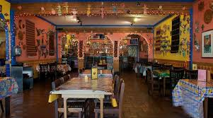

Our Story
The reason give the restaurant this name and choose this Cuisine because I have a friend that is very dear to me named Aria, her favorite food is Mexican food so I decided to make the resturaunt a Mexican Resturaunt. In this resturaunt we focus on 3 things
- Getting that authentic Mexican Vibe, as if you are in the country
- Amazing Customer service
- Food That Tastes Amazing
Cardio

In our resturaunt we like to keep things a certain way so that if feels like you took a visit to Mexico for a few hours to eat. We do this by utilizing your 5 senses to help enhance the feeling:
- As soon as you walk in your hit with all sorts of Mexican flavors and smells
- The colors and look of the resturaunt makes you feel like you're at someones house
- Authentic Mexican music will be played
Personal Training

We serve many cultural foods made from handmade recipes made from a close Mexican family friend a few of the many foods we serve is:
- Steak Fajitas
- Chicken Tacos
- Burritos
Customer Service
Our Waiters and Waitresses are experts in the kind of Cuisine and will be able to help you with any kind of questions you have whether it be food recommendations or just any kind of help with the resturaunt.
For more information about how to stay active visit U.S. Department of Health and human services.